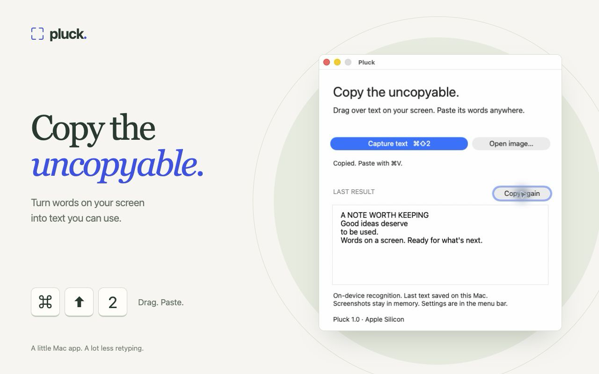
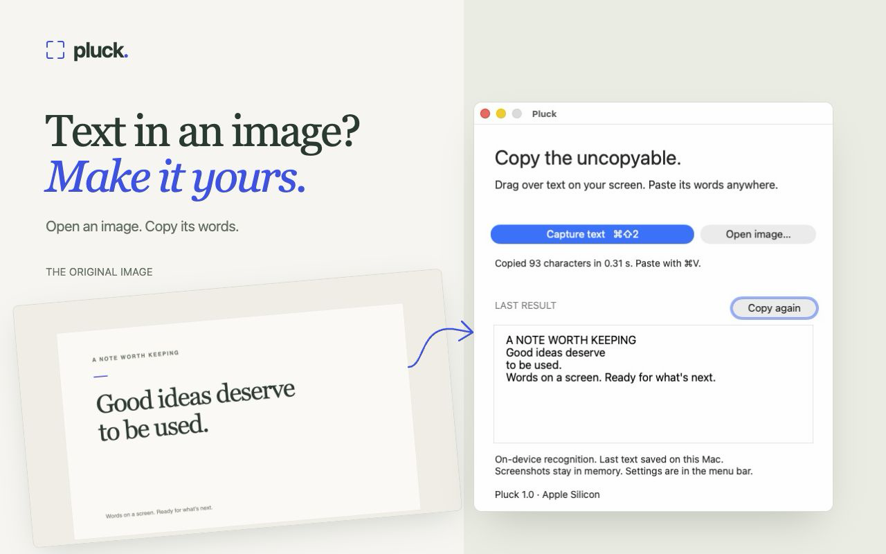
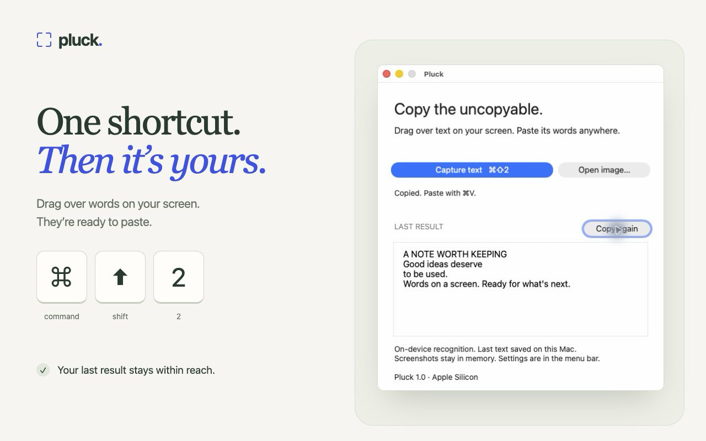
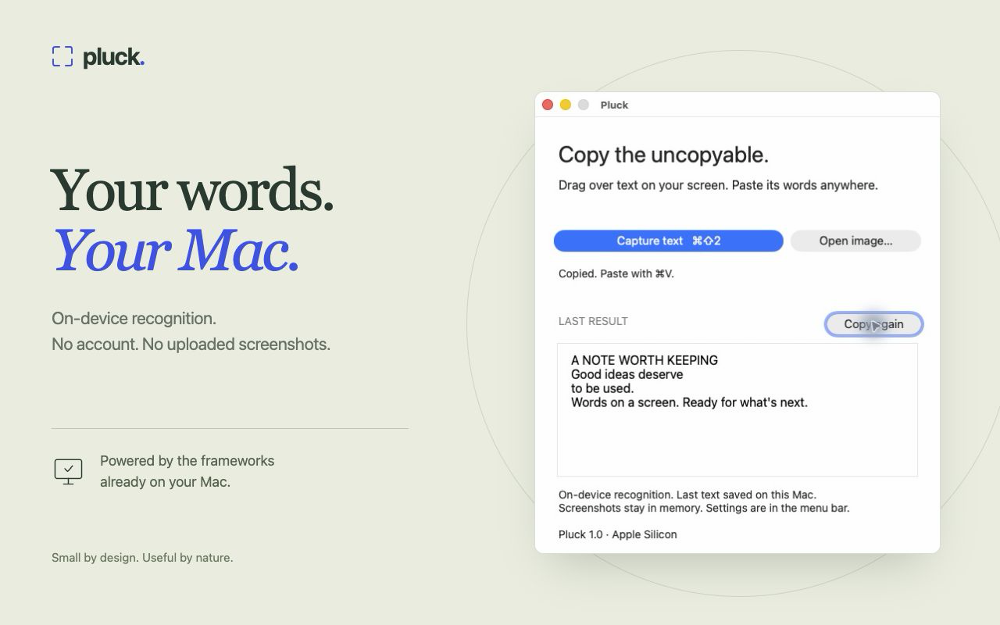

Pluck App Store artwork
Four screenshots, built around real Pluck captures. Each exports at 1280 × 800.


01 · Copy the uncopyable Open PNG ↗


02 · Image to text Open PNG ↗


03 · One shortcut Open PNG ↗


04 · On your Mac Open PNG ↗
Motion study
A 20-second animation of the screenshot artwork. This is a marketing concept, not a recorded walkthrough or an uploaded App Store video.
Download the motion study ↗